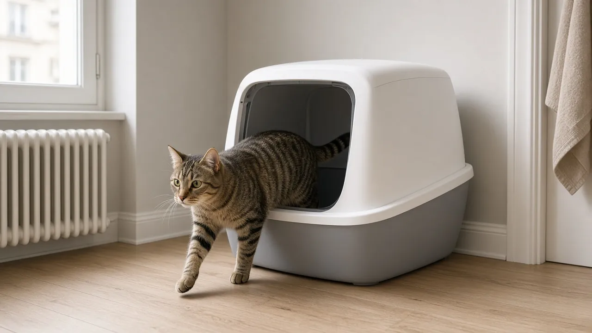
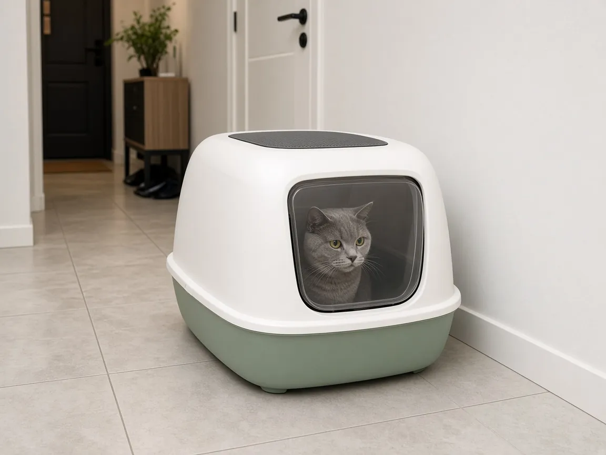
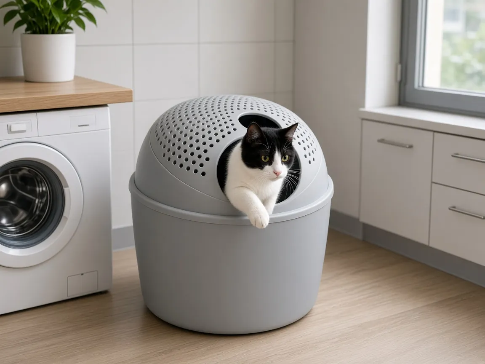
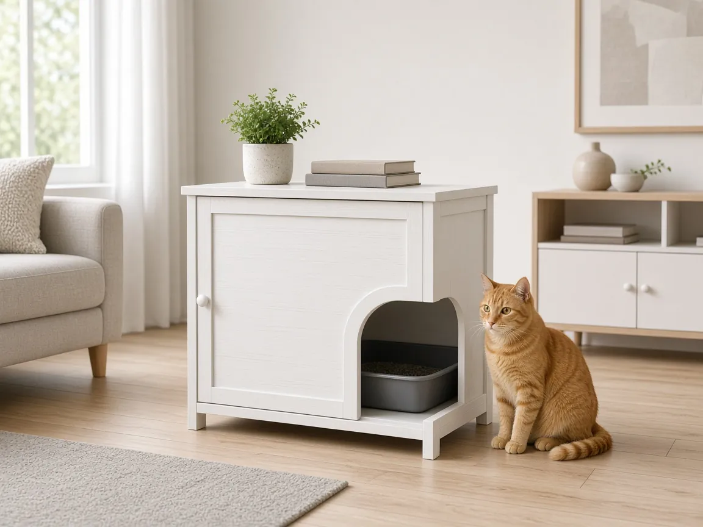

Maison de toilette pour chat : laquelle choisir en appartement ?

En appartement, le bac à litière est souvent à quelques mètres du salon. Une maison de toilette, c’est-à-dire un bac à litière fermé, cache la litière, limite les projections et retient une partie des odeurs. Encore faut-il que ton chat accepte d’y entrer. Voici les trois grands types de modèles, les critères qui comptent vraiment dans un petit logement, et nos astuces pour une transition sans accident.
Comment choisir une maison de toilette pour chat
- La taille : ton chat doit pouvoir entrer, se retourner et gratter sans toucher le couvercle. Compare les dimensions intérieures avec sa longueur, queue comprise. Pour un grand chat, prends un modèle XL.
- L’entrée : une entrée frontale avec porte battante convient à la plupart des chats. Une entrée par le dessus limite les projections mais demande un chat qui saute facilement. Vérifie aussi la hauteur du rebord.
- Les odeurs et le filtre à charbon : un filtre à charbon dans le couvercle aide à contenir les odeurs. Vérifie qu’il se remplace facilement et que les recharges sont faciles à trouver.
- Le nettoyage : un couvercle qui se clipse et se retire en quelques secondes, un bac sans recoins et un plastique lisse te font gagner du temps chaque jour.
- La place en appartement : mesure l’emplacement avant d’acheter, en comptant l’espace pour ouvrir le couvercle et passer la pelle. Un modèle d’angle ou un meuble peut s’intégrer dans une salle de bain ou une entrée.
- Ton chat doit accepter le couvercle : certains chats n’aiment pas être enfermés pour faire leurs besoins. Si le tien a toujours utilisé un bac ouvert, prévois une transition progressive.
1. Le bac à litière fermé avec porte et filtre

Le plus polyvalent pour un appartement
C’est la maison de toilette classique : un bac profond, un couvercle qui se clipse, une porte battante à l’avant et un filtre à charbon sur le dessus. La porte cache la litière et retient une partie des odeurs, le couvercle limite les projections quand ton chat gratte. Choisis un modèle avec une porte transparente, que la plupart des chats acceptent plus facilement, et une poignée pour le déplacer. C’est le meilleur point de départ si tu passes d’un bac ouvert à un bac fermé.
Voir sur Amazon : maisons de toilette avec porte2. Le bac à litière à entrée par le dessus

Le plus propre autour du bac
Ton chat entre et sort par une ouverture sur le couvercle. Le couvercle perforé fait office de grille : la litière restée entre ses coussinets tombe dedans au lieu de se disperser sur le sol. C’est aussi une bonne solution si tu as un chien qui fouille la litière ou un jeune enfant curieux. En revanche, il demande un chat agile : évite-le pour un chaton, un chat âgé ou un chat qui a du mal à sauter.
Voir sur Amazon : bacs à entrée par le dessus3. Le meuble cache-litière

Le plus discret dans une pièce à vivre
Le bac à litière se glisse dans un meuble qui ressemble à un buffet ou à une table de chevet. Ton chat entre par une ouverture latérale, et le dessus sert de surface de rangement ou de déco. C’est la solution idéale quand le bac doit rester dans le salon ou une chambre faute de place ailleurs. Vérifie la taille du bac qui rentre dedans, l’accès pour nettoyer (porte qui s’ouvre en grand) et la résistance du matériau à l’humidité.
Voir sur Amazon : meubles cache-litièreQuel modèle pour quelle situation ?
| Situation | Modèle conseillé | Pourquoi |
|---|---|---|
| Premier bac fermé | Bac fermé avec porte et filtre | Facile d’accès, porte amovible pour la transition |
| Litière partout sur le sol | Bac à entrée par le dessus | Le couvercle perforé retient les grains |
| Chien ou jeune enfant à la maison | Bac à entrée par le dessus | Accès difficile pour eux |
| Bac dans le salon ou une chambre | Meuble cache-litière | Se fond dans la déco |
| Chaton ou chat âgé | Bac fermé à entrée basse | Pas besoin de sauter |
Nos astuces pour que ton chat adopte sa maison de toilette
- Transition progressive : place la maison de toilette à côté de l’ancien bac pendant quelques jours, avec la même litière, puis retire l’ancien quand ton chat utilise le nouveau sans hésiter.
- Retire la porte au début : beaucoup de chats se méfient de la porte battante. Enlève-la les premiers jours, ou relève-la avec un morceau de ruban adhésif, puis remets-la quand il a pris ses habitudes.
- Emplacement calme : choisis un coin tranquille, accessible jour et nuit, loin de ses gamelles et de son eau, et évite de le déplacer ensuite.
- Mets un peu de litière usagée de l’ancien bac dans le nouveau pour qu’il reconnaisse son odeur.
- Ramasse les selles et les pipis agglomérés tous les jours : un bac fermé garde les odeurs à l’intérieur, et un chat refuse plus facilement un bac sale qu’il ne voit pas.
Si ton chat se met à faire à côté, va et vient souvent au bac ou change ses habitudes de propreté, ne mets pas tout sur le compte du couvercle : demande conseil à ton vétérinaire.
Quel budget prévoir ?
Un bac fermé simple reste en général l’option la plus abordable. Les modèles avec filtre, porte transparente ou entrée par le dessus coûtent un peu plus, et les meubles cache-litière sont les plus chers, selon le matériau et la taille. Pense aussi au coût des filtres de rechange. Les prix changent souvent, vérifie-les sur la page du vendeur.
FAQ
Une maison de toilette supprime-t-elle les odeurs ?
Elle les limite, surtout avec un filtre à charbon, mais elle ne les supprime pas. Ce qui compte le plus reste le ramassage quotidien des selles et des pipis agglomérés, le changement complet de la litière à intervalle régulier et le remplacement du filtre selon les indications du fabricant.
Mon chat refuse sa nouvelle maison de toilette, que faire ?
Retire la porte battante, voire le couvercle, pendant les premiers jours, et utilise la même litière qu’avant. Laisse l’ancien bac à côté le temps de la transition. Si ton chat change brusquement ses habitudes de propreté ou semble gêné pour faire ses besoins, demande conseil à ton vétérinaire.
Bac fermé ou bac à entrée par le dessus, que choisir ?
Le bac fermé avec porte frontale convient à la plupart des chats et reste facile d’accès. Le bac à entrée par le dessus limite très bien les projections de litière et décourage les chiens ou les jeunes enfants, mais il demande un chat agile : évite-le pour un chaton, un chat âgé ou un chat qui a du mal à sauter.
Quelle taille de maison de toilette pour mon chat ?
Ton chat doit pouvoir entrer, se retourner et gratter sans se cogner au couvercle. En général, plus le bac est grand, mieux c’est : compare les dimensions intérieures avec la taille de ton chat, queue comprise, plutôt que de te fier aux dimensions extérieures.
Où placer la maison de toilette dans un appartement ?
Dans un endroit calme, accessible à toute heure et loin de ses gamelles et de son eau : salle de bain, coin d’entrée, buanderie. Évite le passage, la proximité immédiate d’une machine à laver bruyante et les pièces dont la porte peut rester fermée.
Notre avis
Pour un premier pas vers le bac fermé, prends une maison de toilette avec porte et filtre à charbon : c’est la plus polyvalente et la plus facile à faire accepter. Si la litière finit partout ou si un chien fouille le bac, le bac à entrée par le dessus règle le problème, à condition que ton chat soit agile. Si le bac doit rester dans le salon, le meuble cache-litière est la solution la plus discrète. Pour limiter encore la litière sur le sol, ajoute un tapis de litière adapté à l’appartement. Et si tu manques de temps pour le nettoyage, vois notre guide de la litière automatique pour petit appartement. Pour le reste, vois notre checklist équipement chat d’appartement.
Liens affiliés Amazon : une commission peut être versée, sans surcoût pour toi.